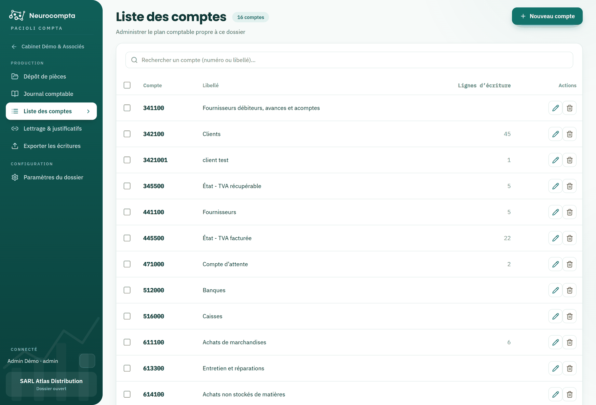

Gérer la liste des comptes
Le plan comptable du dossier.
Chaque dossier dispose de son propre plan de comptes. Il est créé à l'ouverture du dossier avec une amorce adaptée au pays choisi, puis complété au fil de la production.
Les comptes utilisés par l'analyse sont ajoutés automatiquement : la liste s'enrichit sans intervention.

Ce que vous pouvez faire
- Rechercher un compte par numéro ou par intitulé.
- Créer un compte, ou modifier l'intitulé d'un compte existant.
- Supprimer un compte qui n'est mouvementé par aucune écriture.
Une amorce selon le pays
Un dossier marocain démarre sur le plan CGNC, un dossier français sur le PCG, un dossier de la zone OHADA sur le SYSCOHADA. Ces amorces couvrent l'essentiel — tiers, TVA, banque, caisse, achats, ventes — et sont faites pour être complétées.
Astuce — Vous pouvez aussi créer un compte sans quitter la saisie d'écriture, directement depuis la liste déroulante du champ Compte.